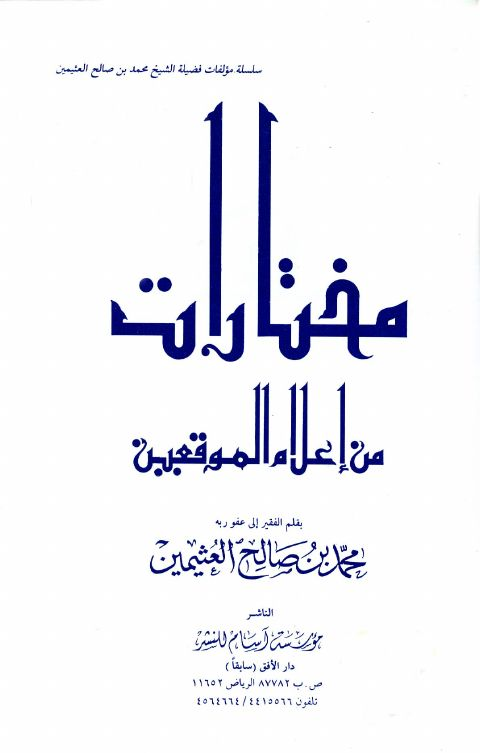
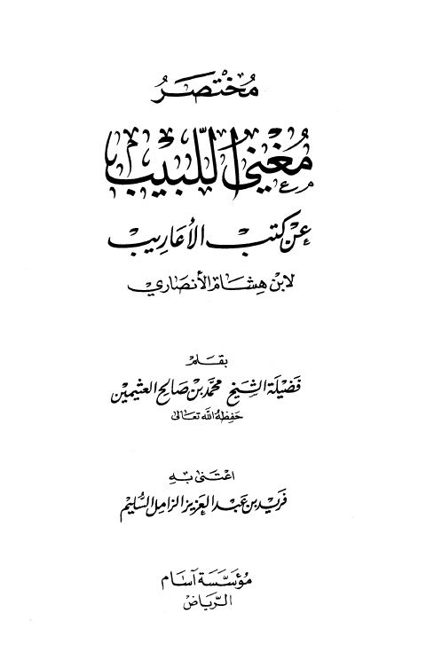
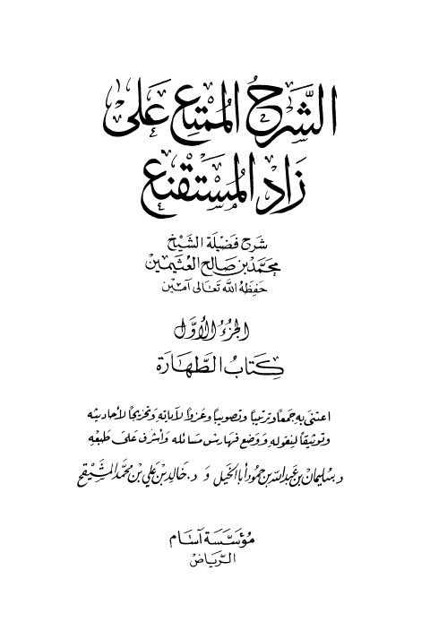

مختارات من إعلام الموقعين مختارات من إعلام الموقعين محمد بن صالح العثيمين
مختصر مغني اللبيب عن كتب الأعاريب لابن هشام الأنصاري مختصر مغني اللبيب عن كتب الأعاريب لابن هشام الأنصاري محمد بن صالح العثيمين
الشرح الممتع على زاد المستقنع- ط آسام الشرح الممتع على زاد المستقنع- ط آسام محمد بن صالح العثيمين